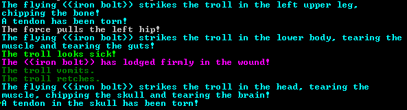

Po wybraniu miejsca gdzie chcemy zbudować swoją twierdzę i ekwipunku możemy wybrać tryb fortress mode i zacząć rozgrywkę.

Rozgrywkę najlepiej zacząć wykopując kilka pokoi w skale i zabraniu przedmiotów które zabraliśmy do środka, zetnijmy też kilka drzew aby mieć z czego zbudować różne potrzebne meble i przedmioty. Każdy z naszych krasnoludów będzie potrzebował łóżka, warto również stworzyć miejsce gdzie będą oni mogli się spotkać i odpocząć po ciężkim dniu pracy. Wykopmy również miejsce gdzie będziemy mogli składać różne przedmioty które będziemy używać później.
Aby nasze krasnoludy czuły się dobrze będą one potrzebowały duże ilości jedzenia i alkoholu, dlatego na samym początku najlepiej jest stworzyć farmę gdzie nasze krasnoludy będą mogły uprawiać różne rośliny i późnej robić z nich alkohol lub inne jedzenie.
Podczas istnienia naszego fortu będziemy atakowani przez przeróżne stwory, oblężenia goblinów, najazdy elfów, mistyczne zapomniane stwory o przeróżnych mutacjach i umiejętnościach, dlatego ważne jest aby zaopatrzyć się w szpital do leczenia naszych wojowników i w najwyższej jakości pancerz i bronie.